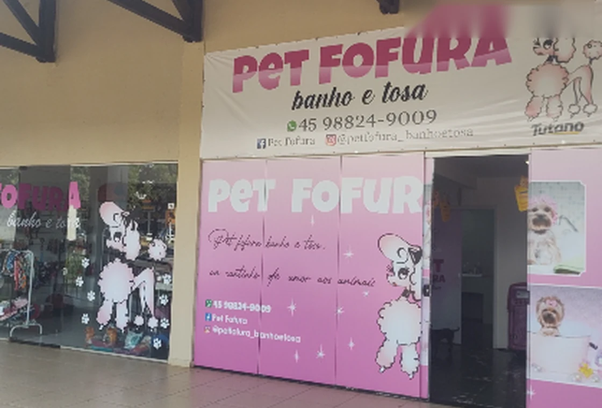

PASSO 01
Fale com a gente
Chame nossa equipe pelo WhatsApp.
Pet Shop, banho e tosa e consultório veterinário em Cascavel. Tudo para cuidar de quem faz parte da família.
Carinho em cada etapa do atendimentoSeu agendamento em três passos simples.
Chame nossa equipe pelo WhatsApp.
Escolha o serviço e confirme a disponibilidade.
Recebemos seu companheiro com atenção e carinho.
Da rotina de beleza aos cuidados com a saúde, encontre o atendimento que seu pet precisa.


Acompanhamento e orientações para a saúde do seu melhor amigo.
Consultar atendimento

Nossa fachadaA Pet Fofura & Consultório Veterinário reúne cuidados de higiene, beleza e atendimento veterinário em Cascavel, com o carinho que cada animal merece.
Um espaço para quem deseja praticidade e atenção ao seu companheiro, com atendimento próximo e acolhedor.
Conheça nosso atendimentoFotografias reais de banco de imagens para ilustrar os serviços. Veja o dia a dia da Pet Fofura no Instagram.
Encontrou uma dúvida? Nossa equipe também responde pelo WhatsApp.
Tirar uma dúvidaÉ simples: clique no botão do WhatsApp, informe o serviço desejado e combine o horário disponível com a equipe.
A Pet Fofura divulga Pet Shop, banho e tosa e consultório veterinário. Consulte a equipe sobre o atendimento específico de que seu pet precisa.
Sim! Preencha o formulário abaixo e você será direcionado ao WhatsApp com uma mensagem pronta para enviar.
Encontre a Pet Fofura ou envie sua mensagem diretamente pelo WhatsApp.
Preencha os campos e toque em enviar. A conversa será aberta no WhatsApp.